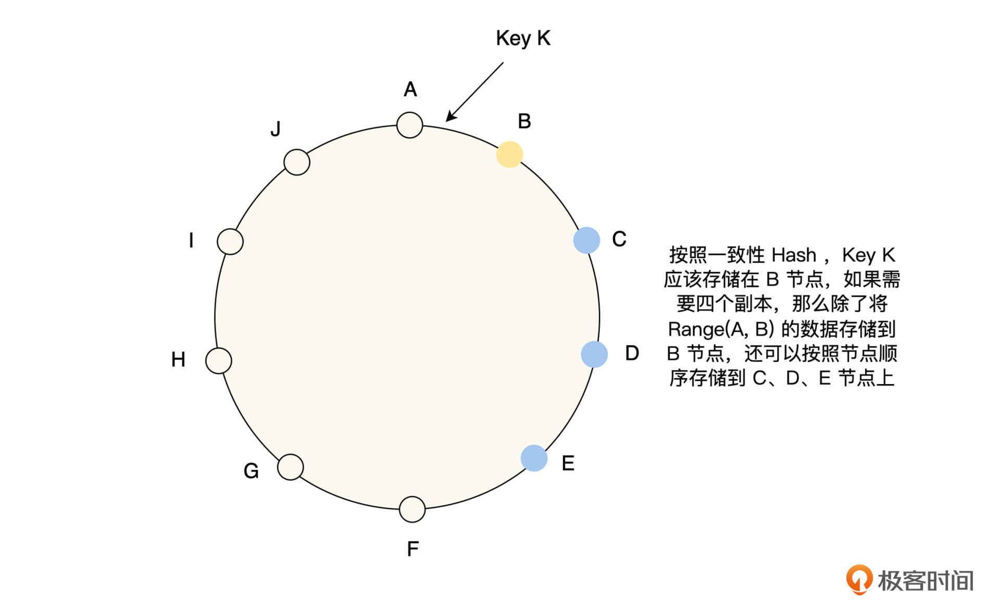

- 00 开篇词 掌握好学习路径，分布式系统原来如此简单.md.html
- 01 导读：以前因后果为脉络，串起网状知识体系.md.html
- 02 新的挑战：分布式系统是银弹吗？我看未必！.md.html
- 03 CAP 理论：分布式场景下我们真的只能三选二吗？.md.html
- 04 注册发现： AP 系统和 CP 系统哪个更合适？.md.html
- 05 负载均衡：从状态的角度重新思考负载均衡.md.html
- 06 配置中心：如何确保配置的强一致性呢？.md.html
- 07 分布式锁：所有的分布式锁都是错误的？.md.html
- 08 重试幂等：让程序 Exactly-once 很难吗？.md.html
- 09 雪崩（一）：熔断，让故障自适应地恢复.md.html
- 10 雪崩（二）：限流，抛弃超过设计容量的请求.md.html
- 11 雪崩（三）：降级，无奈的丢车保帅之举.md.html
- 12 雪崩（四）：扩容，没有用钱解决不了的问题.md.html
- 13 可观测性（一）：如何监控一个复杂的分布式系统？.md.html
- 14 可观测性（二）：如何设计一个高效的告警系统？.md.html
- 15 故障（一）：预案管理竟然能让被动故障自动恢复？.md.html
- 16 故障（二）：变更管理，解决主动故障的高效思维方式.md.html
- 17 分片（一）：如何选择最适合的水平分片方式？.md.html
- 18 分片（二）：垂直分片和混合分片的 trade-off.md.html
- 19 复制（一）：主从复制从副本的数据可以读吗？.md.html
- 20 复制（二）：多主复制的多主副本同时修改了怎么办？.md.html
- 21 复制（三）：最早的数据复制方式竟然是无主复制？.md.html
- 22 事务（一）：一致性，事务的集大成者.md.html
- 23 事务（二）：原子性，对应用层提供的完美抽象.md.html
- 24 事务（三）：隔离性，正确与性能之间权衡的艺术.md.html
- 25 事务（四）：持久性，吃一碗粉就付一碗粉的钱.md.html
- 26 一致性与共识（一）：数据一致性都有哪些级别？.md.html
- 27 一致性与共识（二）：它们是鸡生蛋还是蛋生鸡？.md.html
- 28 一致性与共识（三）：共识与事务之间道不明的关系.md.html
- 29 分布式计算技术的发展史：从单进程服务到 Service Mesh.md.html
- 30 分布式存储技术的发展史：从 ACID 到 NewSQL.md.html
- 春节加餐 技术债如房贷，是否借贷怎样取舍？.md.html
- 春节加餐 深入聊一聊计算机系统的时间.md.html
- 春节加餐 系统性思维，高效学习和工作的利器.md.html
- 结束语 在分布式技术的大潮流中自由冲浪吧！.md.html
- 捐赠
21 复制（三）：最早的数据复制方式竟然是无主复制？
你好，我是陈现麟。
通过上节课，我们掌握了在部署多数据中心的时候，可以用多主复制的方式，让用户直接读写离自己最近的数据中心的数据，减少用户与数据中心之间的网络延迟，提升用户体验。
当我们的业务面向全球的用户时，这个优点将会变得尤为重要，比如一个北京的用户，访问北京的数据中心，网络时延为毫秒级别，但是当他访问美国的数据中心时，网络时延就是百毫秒级别了，这是影响用户体验的关键点。所以，当极客时间启动全球业务的时候，多主复制是一个可以考虑的方案。
但不论是主从复制还是多主复制，所有的写入操作都必须依赖主节点，如果主节点出现故障，则必须再选举出一个新的主节点后，才能继续提供写服务，否则就将大大影响系统的可用性。那么是否有办法可以让单节点故障时，系统的可用性完全不受到影响呢？
我们可以这样思考一下，既然系统的可用性是由主节点的故障导致的，那么我们是否能去掉主节点和从节点的角色，也就是让系统中所有节点的角色都是对等的，这样是否可以解决问题呢？
其实这就是无主复制的数据复制方式，它确实可以解决由主节点故障，导致的系统可用性问题。虽然无主复制是“复制”系列课程的最后一节，但其实它才是最早出现的数据复制方式。无主复制又称为去中心复制，只不过在关系数据库出现并且主导后，由于要确保各副本写入顺序的一致性，主从复制开始流行起来，无主复制被大家慢慢遗忘了。
本节课中，我们将按无主复制的实现方案，面临的问题，以及如何解决这个思路来学习，最后对主从复制、多主复制和无主复制，这三种数据复制的方式进行比较和总结。
如何实现无主复制
无主复制顾名思义，即集群中没有主节点和从节点之分，所有节点的角色都是对等的，每个节点负责存储和处理一定范围的数据，并且由于高可用的要求，每一份数据都需要在多个节点上存储，那么一种常见的处理方式就如下图所示。

从图中可以看到，每一份数据按顺序存储多个副本，每一个节点都会负责多个范围数据的存储，节点 B 存储 Key Range (H，B) 的数据，节点 C 存储 Key Range (I，C) 的数据，节点 E 存储 Key Range (A，E) 的数据。
这里要特别注意，主从复制和无主复制有一个非常大的区别，主从复制先写主节点，然后由主节点将数据变更同步到所有的从副本，从副本数据的变更顺序由主节点的写入顺序决定；但是，无主复制是由客户端或代理程序，直接负责将数据写入多个存储节点，这些存储节点之间是不会直接进行数据同步的。
数据读写
从刚才的讨论中可以看出，无主复制写入数据时，为了数据的高可用，会向多个节点写入多份数据，那么它是等所有的节点都写入成功，客户端才返回成功呢？还是有一个节点写入成功，客户端就返回成功呢？
同样地，读取数据也存在这个问题，每一份数据都有多个副本，那么它是等所有的节点都读取成功，客户端才返回成功呢？还是有一个节点读取成功，客户端就返回成功呢？
这里我们举个例子来讨论一下，假设现在有 3 个副本，如果数据成功写入 1 个副本，那么要确保读请求一定能读取到最新写入的数据，就需要成功读取 3 个副本的数据；如果数据成功写入 2 个副本，则需要成功读取 2 个副本的数据；如果数据成功写入 3 个副本，那么成功读取 1 个副本的数据即可。
这样就可以得出一个结论，如果要确保读取到最新的数据，读取的副本和写入的副本之间的交集不能为空，只要存在交集，就必定有一个写入的最新副本被读取到，那么我们就可以按如下的方式来定义这个问题。
假设对于每一份数据，我们保存 n 个副本，客户端写入成功的副本数为 w ，读取成功的副本数为 r ，那么只需要满足仲裁条件 w + r > n 成立，读副本和写副本之间的交集就一定不为空，即一定能读取到最新的写入。
我们将满足仲裁条件 w + r > n 的 w 和 r 称之为法定票数写和读，这就是Quorum 机制，你也一定能发现它其实就是抽屉原理的应用。那么对于 w、r 和 n 的值，通常是可以配置的，一个常见的配置选择为，设置 n 为奇数（通常为 3 或 5 ），w = r = (n + 1)/2 向上取整。这个配置的读写比较均衡，比如 n = 5，那么 w = r = 3，读和写都保证 3 个副本成功即可，能容忍 2 个节点故障。
在实际的读多写少的业务场景中，我们假设 n = 5 ，如果想要读性能最高，可以设置 w = n = 5 ，r = 1 ，在读取的时候，只需等待一个节点读取成功即可。但是在写入的时候，需要所有的副本都写入成功，因此它不能容忍节点故障，如果有一个节点不可用，将会导致写入失败。如果 w = 4 ，r = 2 ，那么读性能依然比较高，并且能容忍一个节点不可用，这就是读性能、写性能和可用性之间的权衡。
反之也是同样的思路，对于写多读少的业务场景，我们假设 n = 5 ，如果想要写性能最高，那么可以设置 r = n = 5 ，w = 1 ，在写入的时候，只需等待一个节点读取成功即可。但是在读取的时候，需要所有的副本都读取成功，因此它不能容忍节点故障，如果有一个节点不可用，将会导致读取失败。如果 r = 4 ，w = 2 ，那么读性能依然比较高，并且能容忍一个节点不可用。
现在我们可以看出，Quorum 机制通过参数的调整，能够非常方便地适应业务的特点，在读性能、写性能和可用性之间达到平衡。
数据修复
我们知道一个复制模型，应该确保数据最终都能成功复制到所有的副本上，主从复制和多主复制是通过主节点接受数据写入，并且由主节点负责将数据副本，成功复制到所有的从副本来保证的。但是在上文“数据读写”的讨论中，我们了解了当 w < n 时，并不能保证数据成功写入所有的副本中，那么无主复制的这个问题应该如何解决呢？一般来说，有如下的两种方式来实现数据的修复。
首先，是读修复。当客户端并行读取多个副本时，如果检测到某一副本上的数据是过期的，那么在读取数据成功后，就异步将新值写入到所有过期的副本上，进行数据修复，具体如下图所示。
其次，是反熵过程。由存储系统启动后台进程，不断去查找副本之间数据的差异，将数据从新的副本上复制到旧的副本上。这里要注意，反熵过程在同步数据的时候，不能保证以数据写入的顺序复制到其他的副本，这和主从复制有着非常大的差异，同时由于数据同步是后台异步复制的，会有明显的同步滞后。
总体来看，读修复对于读取频繁的数据，修复会非常及时，但它只有在数据被读取时才会发生，那么如果系统只支持读修复，不支持反熵过程的话，有一些很少访问的数据，在还没有发生读修复时，会因为副本节点的不可用而更新丢失，影响系统的持久性。所以，将读修复和反熵过程结合是一种更全面的策略。
一个关键的选择
到这里，我们已经掌握了如何实现一个无主复制的数据系统，不过在这个系统中，还有一个非常关键的选择，如果系统的某些节点发生故障，导致读或写的时候，无法等到系统配置的 w 和 r 个客户端成功返回，我们应该如何处理呢？这里我们可以依据 2 个方案来思考。
- 当读写无法到达Quorum要求的 w 或 r 时，直接返回失败，并且明确地将错误返回给客户端。
- 在读写的时候，依然是等待 w 和 r 个客户端成功返回，只不过有一些节点不在事先指定的 n 个节点的集合内。比如本课第一幅图中的 Key K，它指定的存储副本集合应该是 B、C、D 和 E，假设 D 出现故障了，那么它的存储集合可以临时修改为 B、C、E 和 F。
你会发现第一个方案，即当系统的故障已经导致仲裁条件不成立时，就返回失败，并且明确地将错误返回给客户端的选择，是一致性和可用性之间的权衡，是为了数据的一致性而放弃了系统的可用性。
对于第二个方案，在数据读写时，当我们在规定的 n 个节点的集合内，无法达到 w 或 r 时，就按照一定的规则再读写一定的节点。这些法定集合之外的数据读写的节点，可以设置一些简单的规则，比如对于一致性 Hash 环来说，可以将读写顺延到下一个节点，作为临时节点进行读写。当故障恢复时，临时节点需要将这些接收到的数据，全部复制到原来的节点上，即进行数据的回传。
通过这个方式，我们可以确保在数据读写时，系统只需要有任意 w 或 r 个节点可用，就能读写成功，这将大大提升系统的可用性。但是这也说明，即使系统的读写能满足仲裁条件 w + r > n ，我们依然无法保证，一定能读取到最新的值，因为新值写入的节点并不包含在这 n 个节点之中。
那么这个方案叫 Sloppy Quorum ，相比于传统的 Quorum ，它为了系统的可用性而牺牲了数据的一致性。目前，几乎所有无主复制的存储系统都支持 Sloppy Quorum，但是它在 Cassandra 中是默认关闭的，而在 Riak 中则是默认启用的，所以我们在使用时，可以根据业务情况进行选择。
三种数据复制模式总结
目前，我们已经学习了三种数据复制模式：主从复制、多主复制和无主复制，因为在我们进行存储系统设计时，数据复制是一个非常关键的选择，所以我们再来总结和分析一下，它们的优缺点以及应用场景，具体如下表。
总结
无主复制由于写入不依赖主节点，所以在主节点故障时，不会出现不可用的情况。但是，也是由于写入不依赖主节点，可能导致副本之间的写入顺序不相同，会影响数据的一致性。
在实现无主复制时，有两个关键问题：数据读写和数据修复。数据读写是通过仲裁条件 w + r > n 来保证的，如果满足 w + r > n ，那么读副本和写副本之间就一定有交集，即一定能读取到最新的写入。而数据修复是通过读修复和反熵过程实现的，这两个方法在数据的持久性和一致性方面存在一定的问题，如果对数据有强一致性的要求，就要谨慎采用无主复制。
然后，我们了解了 Sloppy Quorum ，它相比于传统的 Quorum ，为了系统的可用性而牺牲了数据的一致性，这里我们可以进一步得出，无主复制是一个可用性优先的复制模型。
最后，我们对比了“复制”系列中，三种数据复制模型的优缺点和应用场景，你可以通过这些对比，更加深刻地理解数据复制，并且依据业务场景做出最佳的选择。
思考题
如果现在有这样的一个业务场景：数据需要有 7 个副本，读写都能容忍一个节点失败，并且读请求远远大于写请求，那么 w 和 r 为多少最合适呢？
欢迎你在留言区发表你的看法。如果这节课对你有帮助，也推荐你分享给更多的同事、朋友。
© 2019 - 2023 Liangliang Lee. Powered by gin and hexo-theme-book.